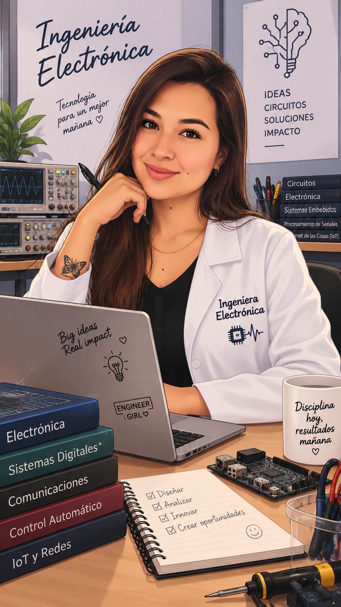

01
Software & datos
MATLABPythonExcelWord
Análisis de datos
INGENIERÍA ELECTRÓNICA · BIG DATA
Soy Johana Hernández, estudiante de Ingeniería Electrónica y especialista en formación en Big Data, con interés en automatización, análisis de datos y soluciones tecnológicas.

01 · SOBRE MÍ
Soy estudiante de décimo semestre de Ingeniería Electrónica y actualmente curso una Especialización en Big Data. Tengo conocimientos en automatización industrial, programación, análisis de datos y herramientas de Microsoft Office.
Mi formación también incluye procesos neumáticos, Excel y digitación. Me considero una persona responsable, analítica y orientada a la solución de problemas, con capacidad para aprender rápidamente y trabajar en equipo.
02 · HABILIDADES
03 · FORMACIÓN
Universidad CESMAG · Formación en curso
Universidad CESMAG · Formación en curso
Automatización de procesos neumáticos discretos · Microsoft Excel 2016 · Digitación de textos · SENA
04 · PROYECTOS ACADÉMICOS
Propuesta de arquitectura Lakehouse y Big Data para integrar PQRS, analizar datos estructurados y no estructurados, y apoyar la detección temprana de riesgos.
Simulación y análisis de sistemas de comunicación digital y desempeño mediante BER.
Diseño y simulación de sistemas neumáticos aplicados a procesos de automatización industrial.
Diseño de soluciones electrónicas orientadas al control y automatización de procesos.
Desarrollo de modelos y análisis exploratorio de datos con herramientas de programación.
05 · CONTACTO
Estoy interesada en oportunidades donde pueda seguir aprendiendo y aportar desde la electrónica, la automatización y los datos.